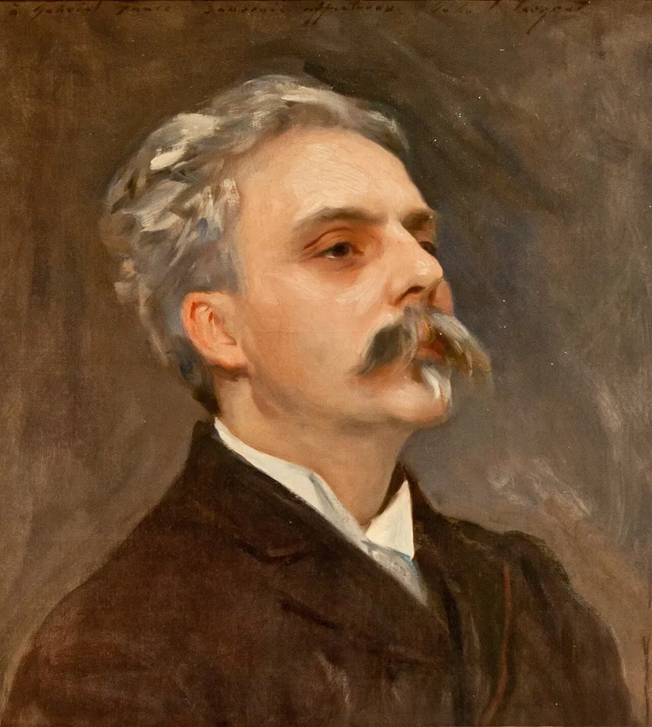

Music pioneer · Romantic · Composer arrangement studio
Gabriel Fauré
Choose the Pavane, then press Play. Listen for the slow, steady walking pulse of an old court dance under a long, sad melody, and for the unexpected chords Fauré slips in where you expect ordinary ones. Playback uses sampled or synthesized instruments; consult the linked edition for fingering, bowing, pedaling, and expressive detail.
Arranging with care
A source staff is not always the melody: in an orchestral score, find the staff carrying the theme. A two-part piano study pairs your selected voice with a source bass; it is not a concert reduction and wide leaps may need redistribution. Saxophone notation is transposed while playback stays at concert pitch. Violin parts stay at concert pitch and are moved by octaves to sit above the open G string. Guitar tab preserves pitch and rhythm but may need a different octave or fingering. Chords are prepared for the Ode to Joy theme only; classical harmony elsewhere requires score study rather than automatic chord guesses. Original ensembles are available only where the source contains those parts. Piano reductions and original classroom studies retain their source identities.
Recordings: Nicholaus P. Brosowsky’s Tonejs-Instruments sample collection, CC BY 3.0; VSCO 2 Community Edition, CC0. Sample credits and processing.
Music pioneer · Romantic · 1845–1924
About Gabriel Fauré

Gabriel Fauré (1845–1924) bridged the Romantic era and modern French music. His harmonies drift through old church modes in ways no one had heard before, and he trained the next generation, including Maurice Ravel.
Life and context
Fauré was born in Pamiers, in the south of France, on 12 May 1845. As a small boy he played the harmonium in the village chapel, and at nine he was sent to Paris to the École Niedermeyer, a school for church musicians. There he studied the old church modes and Gregorian chant. His piano teacher, Camille Saint-Saëns, introduced him to the music of Liszt and Wagner and became his lifelong friend.
For decades Fauré earned his living as a church organist and choirmaster, mostly at the Église de la Madeleine in Paris, and composed in his summer holidays. He became the great French master of the mélodie (art song), with songs such as “Après un rêve” and “Clair de lune”.
In 1887 he wrote the Pavane, a slow dance for orchestra, inspired by the stately court dances of the 1500s, and dedicated it to the Countess Greffulhe, a leading Paris patron. He added an optional choir singing playful verses by Robert de Montesquiou. In the same years he wrote his gentle Requiem.
In 1896 he became professor of composition at the Paris Conservatoire, where his pupils included Maurice Ravel, Nadia Boulanger and George Enescu, and from 1905 to 1920 he was the Conservatoire’s director. In his last years he lost much of his hearing, and high and low notes sounded distorted to him, yet he kept composing chamber music of great power. He died in Paris on 4 November 1924.
Gabriel Fauré: a timeline
- Born in Pamiers, France, on 12 May.
- Enters the École Niedermeyer in Paris.
- Begins piano studies with Camille Saint-Saëns.
- Becomes choirmaster at the Église de la Madeleine.
- Composes the Pavane, Op. 50, and begins the Requiem.
- Professor of composition at the Paris Conservatoire; Ravel joins his class in 1897.
- Becomes director of the Conservatoire.
- Retires as director as his hearing fails.
- Dies in Paris on 4 November.
Modal harmony and the revived dance
A pavane is a slow, dignified procession dance from the 1500s. Dancers stepped in pairs to a steady duple pulse. Fauré keeps that steady walk in the bass, almost like footsteps.
Fauré learned the old church modes as a boy. Above the steady pulse he lets harmonies slide unexpectedly, often lowering the leading tone so a cadence sounds soft rather than final. Listen for chords that seem to arrive somewhere unexpected and then calmly carry on.
Music pioneer · Romantic
Sound experiment: modal color and the old court dance
Version A ends a tune with the usual leading tone rising to the home note. Version B uses the lowered seventh of an old mode instead. Which ending sounds older or softer?
This is an original classroom demonstration of a musical idea, not an excerpt or recording of the composer’s work.
Choose a version, then press Play.
Guided listening
Choose a performance of one of these works. Listen once for its overall character, then again for the detail in the prompt.
- Pavane, Op. 50: follow the melody as it passes between instruments over the steady pizzicato (plucked) bass.
- Requiem, “Pie Jesu”: hear Fauré’s gentle, flowing harmony set for a solo voice.
- “Après un rêve”: listen to a song melody that seems to float above its chords.
Practice and reflection
- Tap the steady pulse of the bass while the score plays. Does it ever stop?
- Find a chord in the score that surprises you. Describe what you expected to hear instead.
- Compare Fauré’s Pavane with Ravel’s Pavane for a Dead Princess. What do the two pupil-and-teacher pieces share?
Check your listening
The bass keeps a steady walking pulse like the steps of a procession, while the harmony above moves through unexpected, mode-colored chords. A useful answer names a feature you can hear and explains its effect. More than one interpretation is possible.
Use the heart | save pill to keep these notes in this browser, or copy them before leaving.